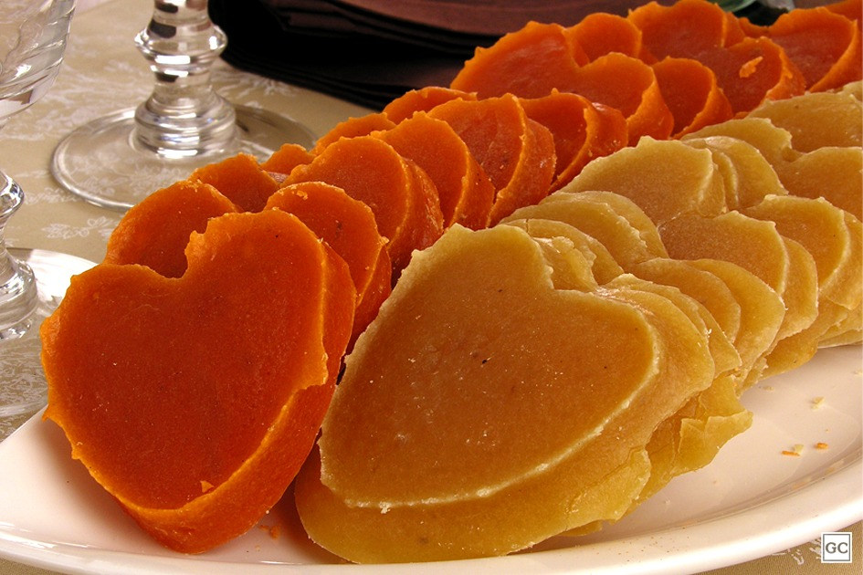

Sobre
Maçãs de Kitakami
Uma maçã do amor saborosa
Doce Comida ReigionalO café é uma bebida produzida a partir dos grãos torrados do fruto do cafeeiro. É servido tradicionalmente quente, mas também pode ser consumido gelado. O café é um estimulante, por possuir cafeína — geralmente 80 a 140 mg para cada 207 ml dependendo do método de preparação.[1] Estudos têm mostrado que pessoas que bebem quatro xícaras de café por dia têm um menor risco de morrer de um ataque cardíaco.[2] Dia 13/04 é dia mundial do café.[3] Em alguns períodos da década de 1980, o café era a segunda mercadoria mais negociada no mundo por valor monetário, atrás apenas do petróleo.

Aeropress
Uma montanha linda da Mantiqueira
Intenso Torra Clara